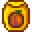
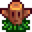
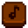
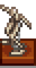

Museo
| Museo y biblioteca de Stardew Valley | |
 | |
 | |
| Horario de apertura: | De 8:00 a 18:00 |
| Cerrado: | Días de Festival |
| Dirección: | Al este del pueblo, cruzando el río, justo al sur de la Herrería |
| Residentes: | |
El Museo se encuentra en la esquina sureste de Pueblo Pelícano, al sur de la Herrería.
El Museo contiene una biblioteca y una galería para exponer la colección del museo. Al principio del juego, toda la colección del museo está vacía. Gunther, el conservador del museo, pedirá ayuda al Jugador donando Artefactos y Minerales.
Sólo se puede donar un ejemplar de cada objeto. Ten en cuenta que si un objeto aún no ha sido donado, su descripción en el inventario o el almacén dice: "Gunther te podrá contar más sobre esto si lo donas al museo". Los objetos pueden reordenarse en la interfaz de donación, o haciendo clic en el pequeño papel situado a la izquierda del escritorio de Gunther en cualquier momento. Los objetos donados pueden examinarse haciendo click derecho sobre ellos.
Penny da clases particulares a Vincent y Jas en la biblioteca los Martes, Miércoles y Viernes.
Recompensas por Donaciones
Gunther ofrece recompensas cuando la colección ha alcanzando ciertos progresos, o por la donación de artefactos específicos.
Total de donaciones
Hay 95 objetos que pueden donarse al Museo.
| Ítems donados | Recompensa |
|---|---|
| 5 | |
| 10 | |
| 15 | |
| 20 | |
| 25 | |
| 30 | |
| 35 |  Semillas de calabaza (9) |
| 40 | |
| 50 | |
| 60 | |
| 70 | |
| 80 |  Tótem de viaje: Granja (5) |
| 90 | |
| 95 (Todos los ítems) |
Minerales donados
Hay un total de 53 Minerales que pueden donarse.
| Minerales donados | Recompensa |
|---|---|
| 11 | |
| 21 | |
| 31 | |
| 41 | |
| 50 |
Artefactos donados
Hay un total de 42 Artefactos que pueden donarse.
Para recibir la recompensa «Ofrenda quemada», debes haber donado al menos 10 artefactos, incluyendo el Disco raro y el Dispositivo enano. Con la siguiente donación (sea el #11 o más) que cumpla estas condiciones recibirás la «Ofrenda quemada»
| Artefactos donados | Recompensa |
|---|---|
| 11 artefactos, incluyendo: |
|
| 15 artefactos | |
| 20 artefactos | |
| 3 artefactos incluyendo: |
|
| 3 artefactos incluyendo: |
 Bloque flauta |
|  Esqueleto de perezoso C |
Libros
- Mirar Libros perdidos
Logros
Existen 2 logros asociados con la donación de Artefactos y Minerales al Museo:
- Tesoro escondido (Dona 40 objetos distintos al museo.)
- Una colección completa (Completa la colección del museo.)
Notas
- Hay un total de 102 espacios disponibles para colocar donaciones, pero un total de sólo 95 artículos disponibles para donar. No se puede acceder a seis espacios en el centro de la mesa más grande para examinar los artículos depositados en ellos, por lo que puede ser aconsejable dejar esta zona vacía.
- Si se utiliza un controlador, es posible que no se pueda acceder a cualquier elemento en diagonal para examinarlo una vez donado.
- Para mover de posición un artefacto en la Switch, tienes que ir a "Opciones" y deshabilitar la opción "Usar menús estilo mando".
- En iOS (y posiblemente en otras versiones móviles), los objetos de la fila inferior no se pueden mover en la interfaz de donación. Sin embargo, si el personaje va a la recepción una casilla a la izquierda de Gunther, tiene la opción de reorganizar la colección (incluso sin completar la colección). En este modo, todos los artículos se pueden reordenar.

Interior del Museo con casillas inalcanzables sombreadas.

Un ejemplo de la colección completa organizada.
Historial
- 1.3.32: Se corrigió la incapacidad de colocar ítems donados en las dos filas inferiores del Museo.
- 1.4: Nuevas Recompensa para la cantidad de 35, 70, 80 y 90 objetos donados. Agregada la posibilidad de ordenar los artefactos del museo después de que la colección este completa. Error corregido donde el movimiento del inventario en la pantalla de donación impedía donar objetos. Se ha corregido un problema en el modo multijugador por el que al reorganizar la colección aparecía el mensaje de que se había donado un nuevo objeto. Se ha hecho otras correcciones relacionadas con la donación de museos.
- 1.5: Interacción en la donación del Museo mejorada.